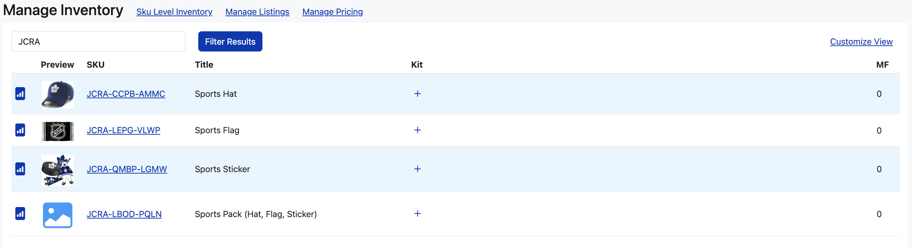
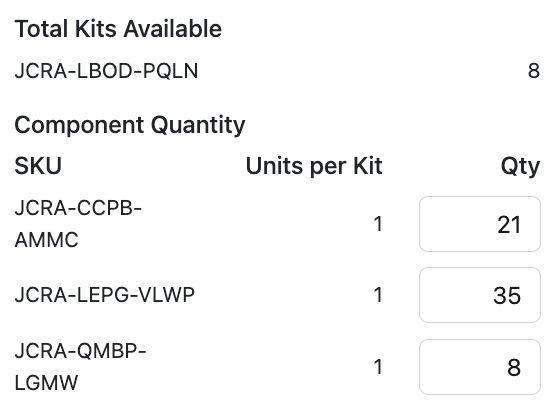

Learn how to set up and use kits, bundles, and inventory shadowing to expand your sales and keep your inventory in sync across multiple listings
Kitting and bundling is a sales strategy that groups multiple items into one product. A kit combines complimentary, but unique, items. A bundle combines multiple of identical items to create packs. Learn more
Advanced Inventory is disabled by default. To enable, head to your Business Settings and click the checkbox.
Set up a standard kit listing using two or more existing listings
Before getting started, it's important to ensure all parts of the kit are in Listing Mirror. In the below example, a user has a hat, flag, and sticker. They want to create a kit for these listings, and make a combo package for a customer to enjoy.
- From the Manage Inventory page, search for your pack containing all items.
- In the above example, SKU JCRA-LBOD-PQLN is this item.
- Click the plus (+) button under Kit.
- In the modal, input each SKU you want to associate with your pack under Component SKU.
- In the above example, the other SKUs represent the single items.
- Under Units Per Kit, input how many individual items you wish to sell in your pack.
- In the above example, the user will be selling one of each item in their pack.
When a customer purchases one of the individual items, we'll let the markets know that you not only have one less of that item, but one less pack you can sell as well. To update inventory, you can either update the individual item, or you can update it on the pack. In the below example, you can see how much each individual item has, as well as the math showing how many are left in the pack.
Set up a standard bundle for two or more listings
Before getting started, it's important to ensure at least two parts of the bundle are in Listing Mirror. In the below example, a user has a bundle of 1, 12, and 24 cups.

- From the Manage Inventory page, search for the items you need to bundle.
- Click a plus (+) button under Kit for your lowest count bundle.
- In the modal, make the Component SKU the lowest count bundle item, with that number of units per kit.
- In the above example, SKU JCRA-LPEL-VKPW is the lowest component with a unit count of one.
- Click the plus (+) button under Kit for the next highest bundle count.
- In the modal, make the Component SKU the lowest count bundle item, with the units per kit the current bundle count number.
- In the above example, SKU JCRA-LPEL-VKPW is still the component SKU, but SKU JCRA-LBPE-MFPW is 12 of that initial SKU.
- Repeat until all bundle items are accounted for.

When a customer purchases one item, we'll reduce the quantity for all items. We do the math for you, so you'll never have to guess how many bundle items you have available. In the below example, the user has 200 single items, which we equate to 16 12-packs, and 8 24-packs.

Set up inventory shadowing for two or more listings
Inventory shadowing in Listing Mirror is defined as sharing inventory between two or more SKUs. This can happen when one item has more than one listing on the marketplace, and you want to sell on both listings, but don't want to manage the same inventory twice. In the below example, the user sells the same plastic plates under two different listings.

- From the Manage Inventory page, search for the SKUs you need to shadow.
- Click the plus (+) button on any of the SKUs.
- Make the Component SKU, the SKU you selected with one unit per kit.
- For the following SKUs, make the Component SKU the initial SKU you clicked on with one unit per kit.

Much like with kits, you only need to change the inventory on one SKU. If you sell on one listing, inventory will be reduced for both listings.